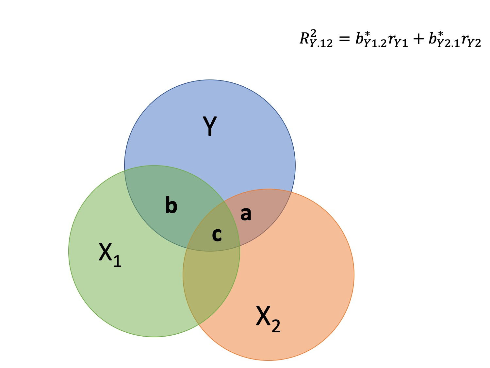

Code
set.seed(123)
x.1 <- rnorm(10, 0, 1)
e.1 <- rnorm(10, 0, 2)
y.1 <- .5 + .55 * x.1 + e.1
d.1 <- data.frame(x.1,y.1)
m.1 <- lm(y.1 ~ x.1, data = d.1)
d1.f<- augment(m.1)The way the world is = our model + error
How good is our model? Does it “fit” the data well?
To assess how well our model fits the data, we simply take all the variability in our outcome and partition it into different categories. For now, we will partition it into two categories: the variability that is predicted by (explained by) our model, and variability that is not.
We formally test how well we are doing with our guesses by partitioning variation
To the extent that we can generate different predicted values of Y, based on the values of the predicors, we are doing well in our prediction
\[\sum (Y - \bar{Y})^2 = \sum (\hat{Y} -\bar{Y})^2 + \sum(Y - \hat{Y})^2\]
Each of these is the sum of a squared deviation from an expected value of Y. We can abbreviate the sum of squared deviations:
\[SS_{Y} = SS_{\text{Model}} + SS_{\text{Residual}}\]
\[\frac{s^2_{regression}}{s^2_y} = \frac{SS_{regression}}{SS_Y} = R^2\]
The relative magnitude of sums of squares, especially in more complex designs, provides a way of identifying particularly large and important sources of variability. In the future, we can further partition \(SS_{\text{Model}}\) and \(SS_{\text{Residual}}\) into smaller pieces, which will help us make more specific inferences and increase statistical power, respectively.
\[\Large s^2_Y = s^2_{\hat{Y}} + s^2_{e}\]
Consider the case with no correlation between X and Y
\[\Large \hat{Y} = \bar{Y}\]
To the extent that we can generate different predicted values of Y based on the values of the predictors, we are doing well in our prediction
\[\large \sum (Y - \bar{Y})^2 = \sum (\hat{Y} -\bar{Y})^2 + \sum(Y - \hat{Y})^2\]
\[\Large \frac{s_{Model}^2}{s_{y}^2} = \frac{SS_{Model}}{SS_{Y}} = R^2\]
\(R^2\) represents the proportion of variance in Y that is explained by the model.
\(\sqrt{R^2} = R\) is the correlation between the predicted values of Y from the model and the actual values of Y
\[\large \sqrt{R^2} = r_{Y\hat{Y}}\]
set.seed(123)
x.1 <- rnorm(10, 0, 1)
e.1 <- rnorm(10, 0, 2)
y.1 <- .5 + .55 * x.1 + e.1
d.1 <- data.frame(x.1,y.1)
m.1 <- lm(y.1 ~ x.1, data = d.1)
d1.f<- augment(m.1)d1.f %>%
ggplot(aes(x = x.1, y = y.1)) +
geom_smooth(se = F, method = "lm")+
geom_point(shape = 1, size = 4) +
geom_point(aes(y = .fitted), color = "red", size = 4)+
theme_bw(base_size = 35) `geom_smooth()` using formula = 'y ~ x'
d1.f %>%
ggplot(aes(x = y.1, y = .fitted)) +
geom_smooth(se = F, method = "lm")+
geom_point(color = "black", size = 4) +
theme_bw(base_size = 35)`geom_smooth()` using formula = 'y ~ x'
galton.data <- psychTools::galton
fit.1 = lm(child ~ parent, data = galton.data)
summary(fit.1)
Call:
lm(formula = child ~ parent, data = galton.data)
Residuals:
Min 1Q Median 3Q Max
-7.8050 -1.3661 0.0487 1.6339 5.9264
Coefficients:
Estimate Std. Error t value Pr(>|t|)
(Intercept) 23.94153 2.81088 8.517 <2e-16 ***
parent 0.64629 0.04114 15.711 <2e-16 ***
---
Signif. codes: 0 '***' 0.001 '**' 0.01 '*' 0.05 '.' 0.1 ' ' 1
Residual standard error: 2.239 on 926 degrees of freedom
Multiple R-squared: 0.2105, Adjusted R-squared: 0.2096
F-statistic: 246.8 on 1 and 926 DF, p-value: < 2.2e-16summary(fit.1)$r.squared[1] 0.2104629cor(galton.data$parent, galton.data$child, use = "pairwise")[1] 0.4587624cor(galton.data$parent, galton.data$child)^2[1] 0.2104629galton.fits = augment(fit.1)
cor(galton.fits$child, galton.fits$.fitted)[1] 0.4587624\[\Large \frac{SS_{Model}}{SS_{Y}} = R^2\] \[\Large SS_{Model} = R^2({SS_{Y})}\]
\[\Large SS_{Y} = SS_{Model} + SS_{residual}\]
\[\Large SS_{residual} = SS_{Y} - R^2({SS_{Y})}\]
\[\Large SS_{residual} = (1- R^2){SS_{Y}}\]
R To Check Yourself\[SS_{residual} = (1- R^2){SS_{Y}}\]
r2 = summary(fit.1)$r.squared
fit.1.anova = summary(aov(fit.1))
ssTotal = fit.1.anova[[1]]$`Sum Sq`[1] + fit.1.anova[[1]]$`Sum Sq`[2]
ssResidual = (1 - r2) * ssTotal
# print things out
fit.1.anova Df Sum Sq Mean Sq F value Pr(>F)
parent 1 1237 1237 246.8 <2e-16 ***
Residuals 926 4640 5
---
Signif. codes: 0 '***' 0.001 '**' 0.01 '*' 0.05 '.' 0.1 ' ' 1ssResidual[1] 4640.273???
Warning: The `<scale>` argument of `guides()` cannot be `FALSE`. Use "none" instead as
of ggplot2 3.3.4.`geom_smooth()` using formula = 'y ~ x'
head(fit.1$residuals) 1 2 3 4 5 6
-7.805016 -6.512435 -4.573563 -3.927273 -3.604127 -5.366144 mse = round(mean(fit.1$residuals ^ 2), digits = 2)
mse[1] 5mse = round((summary(fit.1)[["sigma"]]) ^2, digits = 2)
mse[1] 5.01
Call:
lm(formula = child ~ parent, data = galton.data)
Residuals:
Min 1Q Median 3Q Max
-7.8050 -1.3661 0.0487 1.6339 5.9264
Coefficients:
Estimate Std. Error t value Pr(>|t|)
(Intercept) 23.94153 2.81088 8.517 <2e-16 ***
parent 0.64629 0.04114 15.711 <2e-16 ***
---
Signif. codes: 0 '***' 0.001 '**' 0.01 '*' 0.05 '.' 0.1 ' ' 1
Residual standard error: 2.239 on 926 degrees of freedom
Multiple R-squared: 0.2105, Adjusted R-squared: 0.2096
F-statistic: 246.8 on 1 and 926 DF, p-value: < 2.2e-16\[\hat{\sigma} = \sqrt{\frac{SS_{\text{Residual}}}{df_{\text{Residual}}}} = s_{Y|X} = \sqrt{\frac{\Sigma(Y_i -\hat{Y_i})^2}{N-2}}\]
interpreted in original units (unlike \(R^2\))
standard deviation of Y not accounted by model
summary(fit.1)$sigma [1] 2.238547galton.data.1 = broom::augment(fit.1)
psych::describe(galton.data.1$.resid) vars n mean sd median trimmed mad min max range skew kurtosis se
X1 1 928 0 2.24 0.05 0.06 2.26 -7.81 5.93 13.73 -0.24 -0.23 0.07sd(galton.data$child)[1] 2.517941Because the size of \(\hat{\sigma}\) depends on both how well the model does as well as the original units of measurement, it is important to compare it to Y to evaluate!
Residual standard error = square root of the mean square error
Both measuring error, but RSE is a little more useful
sqrt(mse)[1] 2.238303\[Y_{i} \sim\mathcal{N}(\mu,\,\sigma)\ \]
In English: our DV for individual \(i\) is distributed normally with a mean of \(\mu\) and a standard deviation of \(\sigma\)
This describes how we think our DVs are generated, and the paramters of interest A a standard regression model assumes this, but we will see other DGPs such as binomial or poisson that do not
For normal, \(\mu\) gets all the focus but \(\sigma\) is just as important
Our plan is to fix \(\mu\) and then vary sigma to see what happens
set.seed(1234)
x.1 <- rnorm(1000, 0, 1) # randomly select 1000 numbers for x
e.1 <- rnorm(1000, 0, 1) # randomly select 1000 numbers for error
y.1 <- .5 + .55 * x.1 + e.1 # create our y
d.1 <- data.frame(x.1,y.1) # combine x and y into a data.frame
m.1 <- lm(y.1 ~ x.1, data = d.1) # use x to predict y with this datasummary(m.1)
Call:
lm(formula = y.1 ~ x.1, data = d.1)
Residuals:
Min 1Q Median 3Q Max
-3.1661 -0.6439 0.0145 0.6537 3.0684
Coefficients:
Estimate Std. Error t value Pr(>|t|)
(Intercept) 0.51599 0.03100 16.64 <2e-16 ***
x.1 0.60571 0.03109 19.48 <2e-16 ***
---
Signif. codes: 0 '***' 0.001 '**' 0.01 '*' 0.05 '.' 0.1 ' ' 1
Residual standard error: 0.9801 on 998 degrees of freedom
Multiple R-squared: 0.2755, Adjusted R-squared: 0.2748
F-statistic: 379.5 on 1 and 998 DF, p-value: < 2.2e-16library(ggplot2)
ggplot(d.1, aes(x = x.1,y = y.1)) +
geom_point() +
geom_smooth(method = lm) +
scale_x_continuous(limits = c(-3, 3)) +
scale_y_continuous(limits = c(-6, 6))`geom_smooth()` using formula = 'y ~ x'Warning: Removed 4 rows containing non-finite outside the scale range
(`stat_smooth()`).Warning: Removed 4 rows containing missing values or values outside the scale range
(`geom_point()`).
Again, but with a larger sigma
set.seed(987)
e.2 <- rnorm(1000, 0, 2) # larger sigma
y.2 <- .5 + .55 * x.1 + e.2 # same Xs, same mu (.5)
d.2 <- data.frame(x.1,y.2)
m.2 <- lm(y.2 ~ x.1, data = d.2)summary(m.2)
Call:
lm(formula = y.2 ~ x.1, data = d.2)
Residuals:
Min 1Q Median 3Q Max
-6.6267 -1.4359 -0.0192 1.4480 6.3439
Coefficients:
Estimate Std. Error t value Pr(>|t|)
(Intercept) 0.52137 0.06345 8.217 6.43e-16 ***
x.1 0.59823 0.06363 9.402 < 2e-16 ***
---
Signif. codes: 0 '***' 0.001 '**' 0.01 '*' 0.05 '.' 0.1 ' ' 1
Residual standard error: 2.006 on 998 degrees of freedom
Multiple R-squared: 0.08136, Adjusted R-squared: 0.08044
F-statistic: 88.39 on 1 and 998 DF, p-value: < 2.2e-16ggplot(d.2, aes(x=x.1, y=y.2)) +
geom_point() +
geom_smooth(method=lm) +
scale_x_continuous(limits = c(-3, 3)) +
scale_y_continuous(limits = c(-6, 6))`geom_smooth()` using formula = 'y ~ x'Warning: Removed 7 rows containing non-finite outside the scale range
(`stat_smooth()`).Warning: Removed 7 rows containing missing values or values outside the scale range
(`geom_point()`).
two sides of same coin
one in original units, the other standardized
\(R^2\) can be tricky because the numerator and denominator can be changed in different ways.
for example if variance in Y is changed but with the same regression model and residual standard error, \(R^2\) could increase or decrease
set.seed(20200116)
x.1 = rnorm(1000,0,1)
e = seq(4, .01, by = -.1)
r2 = numeric(length = length(e))
rsd= numeric(length = length(e))
for(i in 1:length(e)){
e.1 <- rnorm(1000, 0, e[i])
y.1 <- .5 + .55 * x.1 + e.1
d.1 <- data.frame(x.1,y.1)
m.1 <- lm(y.1 ~ x.1, data = d.1)
r2[i] = summary(m.1)$r.squared
rsd[i] = summary(m.1)$sigma
}
data.frame(r2 = r2, rsd = rsd) %>%
ggplot(aes(x = r2, y = rsd)) +
geom_line() +
scale_x_continuous(expression(paste(R^2))) +
scale_y_continuous(expression(hat(sigma[e]))) +
theme_bw(base_size = 20)
NHST is about making decisions:
In regression, there are several inferential tests being conducted at once. The first is called the omnibus test – this is a test of whether the model fits the data.
\[\Large H_{0}: \rho_{XY}^2= 0\]
\[\Large H_{0}: \rho_{XY}^2 \neq 0\]
It is possible to calculate the significance of your regression with a correlation test. In fact, it would seem quite practical and logical to do so.
However, historically we use a different probability distribution – the F distribution to estimate the significance of our model. It’s important to know that these methods are mathematically equivalent. But the F distribution is useful here, because it works with our ability to partition variance.
The basic idea is asking how much variance remains unexplained in our model. This “left over” variance can be contrasted with an alternative model/hypothesis. Does adding a new predictor variable help explain more variance or should we stick with the most parsimonious (simplest) model?
Every model you report implies that you are favoring that model over an alternative model, typically the null. Taking a more formal model comparison approach allows you to be more flexible, explicit, and deliberate.
fit.1 <- lm(child ~ parent, data = galton.data)
fit.0 <- lm(child ~ 1, data = galton.data)
summary(fit.0)
Call:
lm(formula = child ~ 1, data = galton.data)
Residuals:
Min 1Q Median 3Q Max
-6.3885 -1.8885 0.1115 2.1115 5.6115
Coefficients:
Estimate Std. Error t value Pr(>|t|)
(Intercept) 68.08847 0.08266 823.8 <2e-16 ***
---
Signif. codes: 0 '***' 0.001 '**' 0.01 '*' 0.05 '.' 0.1 ' ' 1
Residual standard error: 2.518 on 927 degrees of freedom
Call:
lm(formula = child ~ parent, data = galton.data)
Residuals:
Min 1Q Median 3Q Max
-7.8050 -1.3661 0.0487 1.6339 5.9264
Coefficients:
Estimate Std. Error t value Pr(>|t|)
(Intercept) 23.94153 2.81088 8.517 <2e-16 ***
parent 0.64629 0.04114 15.711 <2e-16 ***
---
Signif. codes: 0 '***' 0.001 '**' 0.01 '*' 0.05 '.' 0.1 ' ' 1
Residual standard error: 2.239 on 926 degrees of freedom
Multiple R-squared: 0.2105, Adjusted R-squared: 0.2096
F-statistic: 246.8 on 1 and 926 DF, p-value: < 2.2e-16anova(fit.0)Analysis of Variance Table
Response: child
Df Sum Sq Mean Sq F value Pr(>F)
Residuals 927 5877.2 6.34 anova(fit.1)Analysis of Variance Table
Response: child
Df Sum Sq Mean Sq F value Pr(>F)
parent 1 1236.9 1236.93 246.84 < 2.2e-16 ***
Residuals 926 4640.3 5.01
---
Signif. codes: 0 '***' 0.001 '**' 0.01 '*' 0.05 '.' 0.1 ' ' 1anova(fit.1, fit.0)Analysis of Variance Table
Model 1: child ~ parent
Model 2: child ~ 1
Res.Df RSS Df Sum of Sq F Pr(>F)
1 926 4640.3
2 927 5877.2 -1 -1236.9 246.84 < 2.2e-16 ***
---
Signif. codes: 0 '***' 0.001 '**' 0.01 '*' 0.05 '.' 0.1 ' ' 1\[\Large H_{0}: \beta_{1}= 0\] \[\Large H_{1}: \beta_{1} \neq 0\]
Does X provide any predictive information?
Does X provide any explanatory power regarding the variability of Y?
Is the the average value the best guess (i.e., is Y bar equal to the predicted value of Y?)
Is the regression line flat?
Are X and Y correlated?
\[\Large se_{b} = \frac{s_{Y}}{s_{X}}{\sqrt{\frac {1-r_{xy}^2}{n-2}}}\] \[\Large t(n-2) = \frac{b_{1}}{se_{b}}\]
standard errors for the slope coefficient
represent our uncertainty (noise) in our estimate of the regression coefficient
different from residual standard error/deviation (but proportional to)
much like previously we can take our estimate (b) and put confidence regions around it to get an estimate of what could be “possible” if we ran the study again
more complex standard error calculation as the calculation depends on how far the X value (here zero) is away from the mean of X
set.seed(123)
px.1 <- rnorm(1000, 0, 1)
pe.1 <- rnorm(1000, 0, 1)
py.1 <- .5 + .55 * px.1 + pe.1
pd.1 <- data.frame(px.1,py.1)
px.2 <- rnorm(100, 0, 1)
pe.2 <- rnorm(100, 0, 1)
py.2 <- .5 + .55 * px.2 + pe.2
pd.2 <- data.frame(px.2,py.2)
p1 <- ggplot(pd.1, aes(x = px.1,y = py.1)) +
geom_point() +
geom_smooth(method = lm) +
scale_x_continuous(limits = c(-3, 3)) +
scale_y_continuous(limits = c(-3, 3))
p2 <- ggplot(pd.2, aes(x=px.2, y=py.2)) +
geom_point() +
geom_smooth(method=lm) +
scale_x_continuous(limits = c(-3, 3)) +
scale_y_continuous(limits = c(-3, 3))
library(cowplot)
Attaching package: 'cowplot'The following object is masked from 'package:lubridate':
stampplot_grid(p1, p2, ncol=2, labels = c("N = 1000", "N = 100"))`geom_smooth()` using formula = 'y ~ x'Warning: Removed 19 rows containing non-finite outside the scale range
(`stat_smooth()`).Warning: Removed 19 rows containing missing values or values outside the scale range
(`geom_point()`).`geom_smooth()` using formula = 'y ~ x'Warning: Removed 1 row containing non-finite outside the scale range
(`stat_smooth()`).Warning: Removed 1 row containing missing values or values outside the scale range
(`geom_point()`).
\[\hat{Y}\pm t_{critical} * se_{residual}*\sqrt{\frac {1}{n}+\frac{(X-\bar{X})^2}{(n-1)s_{X}^2}}\]
\[\hat{Y}\pm t_{critical} * se_{residual}*\sqrt{1+ \frac {1}{n}+\frac{(X-\bar{X})^2}{(n-1)s_{X}^2}}\]
temp_var <- predict(fit.1, interval="prediction")
new_df <- cbind(galton.data, temp_var)
pred <- ggplot(new_df, aes(y=child, x=parent))+
geom_point() +
geom_smooth(method=lm,se=TRUE) +
geom_ribbon(aes(ymin = lwr, ymax = upr),
fill = "blue", alpha = 0.1)pred
R and write a regression equation?\[\large \hat{Y} = b_0 + b_1X_1 + b_2X_2 + \dots+b_kX_k\]
regression coefficients are “partial” regression coefficients
predicted change in \(Y\) for a 1 unit change in \(X\), holding all other predictors constant
similar to semi-partial correlation – represents part of each \(X\)
\[\large \hat{Y} = b_0 + b_1X_1 + b_2X_2 + \dots+b_kX_k\]
Residual in simple regression can be thought of as a measure of \(Y\) that is left over after accounting for your DV
Partial correlation can be created by:
library(here)
stress.data = read.csv(here("stress.csv"))
library(psych)
describe(stress.data$Stress) vars n mean sd median trimmed mad min max range skew kurtosis se
X1 1 118 5.18 1.88 5.27 5.17 1.65 0.62 10.32 9.71 0.08 0.22 0.17mr.model <- lm(Stress ~ Support + Anxiety, data = stress.data)
tidy(mr.model)# A tibble: 3 × 5
term estimate std.error statistic p.value
<chr> <dbl> <dbl> <dbl> <dbl>
1 (Intercept) -0.316 0.856 -0.369 7.13e- 1
2 Support 0.406 0.0512 7.94 1.49e-12
3 Anxiety 0.256 0.0674 3.80 2.34e- 4???
If a univariate regression is estimating the best-fit line, what is this estimating?
library(visreg)
visreg2d(mr.model,"Support", "Anxiety", plot.type = "persp")
Just like with univariate regression, we calculate the OLS solution. As a reminder, this calculation will yield the estimate that reduces the sum of the squared deviations from the line:
\[\large \hat{Y} = b_0 + b_{1}X1 + b_{2}X_2\] \[\large \text{minimize} \sum (Y-\hat{Y})^2 \]
\[b_{1}^* = \frac{r_{Y1}-r_{Y2}r_{12}}{1-r_{12}^2}\]
\[b_{2}^* = \frac{r_{Y2}-r_{Y1}r_{12}}{1-r_{12}^2}\]
\[b_{1} = b_{1}^*\frac{s_{Y}}{s_{X1}}\]
\[b_{1}^* = b_{1}\frac{s_{X1}}{s_{Y}}\]
\[b_{0} = \bar{Y} - b_{1}\bar{X_{1}} - b_{2}\bar{X_{2}}\]
mr.model <- lm(Stress ~ Support + Anxiety, data = stress.data)
summary(mr.model)
Call:
lm(formula = Stress ~ Support + Anxiety, data = stress.data)
Residuals:
Min 1Q Median 3Q Max
-4.1958 -0.8994 -0.1370 0.9990 3.6995
Coefficients:
Estimate Std. Error t value Pr(>|t|)
(Intercept) -0.31587 0.85596 -0.369 0.712792
Support 0.40618 0.05115 7.941 1.49e-12 ***
Anxiety 0.25609 0.06740 3.799 0.000234 ***
---
Signif. codes: 0 '***' 0.001 '**' 0.01 '*' 0.05 '.' 0.1 ' ' 1
Residual standard error: 1.519 on 115 degrees of freedom
Multiple R-squared: 0.3556, Adjusted R-squared: 0.3444
F-statistic: 31.73 on 2 and 115 DF, p-value: 1.062e-11mr.model <- lm(Stress ~ Support + Anxiety, data = stress.data)
summary(mr.model)
Call:
lm(formula = Stress ~ Support + Anxiety, data = stress.data)
Residuals:
Min 1Q Median 3Q Max
-4.1958 -0.8994 -0.1370 0.9990 3.6995
Coefficients:
Estimate Std. Error t value Pr(>|t|)
(Intercept) -0.31587 0.85596 -0.369 0.712792
Support 0.40618 0.05115 7.941 1.49e-12 ***
Anxiety 0.25609 0.06740 3.799 0.000234 ***
---
Signif. codes: 0 '***' 0.001 '**' 0.01 '*' 0.05 '.' 0.1 ' ' 1
Residual standard error: 1.519 on 115 degrees of freedom
Multiple R-squared: 0.3556, Adjusted R-squared: 0.3444
F-statistic: 31.73 on 2 and 115 DF, p-value: 1.062e-11
Taken from @nickchk
mr.model <- lm(Stress ~ Support + Anxiety, data = stress.data)
summary(mr.model)
Call:
lm(formula = Stress ~ Support + Anxiety, data = stress.data)
Residuals:
Min 1Q Median 3Q Max
-4.1958 -0.8994 -0.1370 0.9990 3.6995
Coefficients:
Estimate Std. Error t value Pr(>|t|)
(Intercept) -0.31587 0.85596 -0.369 0.712792
Support 0.40618 0.05115 7.941 1.49e-12 ***
Anxiety 0.25609 0.06740 3.799 0.000234 ***
---
Signif. codes: 0 '***' 0.001 '**' 0.01 '*' 0.05 '.' 0.1 ' ' 1
Residual standard error: 1.519 on 115 degrees of freedom
Multiple R-squared: 0.3556, Adjusted R-squared: 0.3444
F-statistic: 31.73 on 2 and 115 DF, p-value: 1.062e-11library(broom)
stress.data1 = augment(mr.model)
stress.data1 %>%
ggplot(aes(x = Stress, y = .fitted)) + geom_point() + geom_smooth(method = "lm") + scale_x_continuous("Y (Stress)") + scale_y_continuous(expression(hat(Y))) + theme_bw(base_size = 20)`geom_smooth()` using formula = 'y ~ x'
\[\large \hat{Y} = b_{0} + b_{1}X_{1} + b_{2}X_{2}\]
–
\[\large R = \sqrt{b_{1}^*r_{Y1} + b_{2}^*r_{Y2}}\] \[\large R^2 = {b_{1}^*r_{Y1} + b_{2}^*r_{Y2}}\]


Same interpretation as before
Adding predictors into your model will increase \(R^2\) – regardless of whether or not the predictor is significantly correlated with Y.
Adjusted/Shrunken \(R^2\) takes into account the number of predictors in your model
\[\large R_{A}^2 = 1 - \frac{Var_{res}}{Var_{total}}\]
\[\large R_{A}^2 = 1 - \frac{\frac{SS_{res}}{n-p-1}}{\frac{SS_{total}}{n-1}}\] \[\large R_{A}^2 = 1 - (1 -R^2)\frac{n-1}{n-p-1}\]
\[\large R_{A}^2 = 1 - (1 -R^2)\frac{n-1}{n-p-1}\] - What happens if you add many IV’s to your model that are uncorrelated with your DV?
\[b_{1}^* = \frac{r_{Y1}-r_{Y2}r_{12}}{1-r_{12}^2}\]
summary(mr.model)
Call:
lm(formula = Stress ~ Support + Anxiety, data = stress.data)
Residuals:
Min 1Q Median 3Q Max
-4.1958 -0.8994 -0.1370 0.9990 3.6995
Coefficients:
Estimate Std. Error t value Pr(>|t|)
(Intercept) -0.31587 0.85596 -0.369 0.712792
Support 0.40618 0.05115 7.941 1.49e-12 ***
Anxiety 0.25609 0.06740 3.799 0.000234 ***
---
Signif. codes: 0 '***' 0.001 '**' 0.01 '*' 0.05 '.' 0.1 ' ' 1
Residual standard error: 1.519 on 115 degrees of freedom
Multiple R-squared: 0.3556, Adjusted R-squared: 0.3444
F-statistic: 31.73 on 2 and 115 DF, p-value: 1.062e-11anova(mr.model)Analysis of Variance Table
Response: Stress
Df Sum Sq Mean Sq F value Pr(>F)
Support 1 113.151 113.151 49.028 1.807e-10 ***
Anxiety 1 33.314 33.314 14.435 0.0002336 ***
Residuals 115 265.407 2.308
---
Signif. codes: 0 '***' 0.001 '**' 0.01 '*' 0.05 '.' 0.1 ' ' 1\[\Large H_{0}: \beta_{X}= 0\] \[\Large H_{1}: \beta_{X} \neq 0\]
In the case of univariate regression:
\[\Large se_{b} = \frac{s_{Y}}{s_{X}}{\sqrt{\frac {1-r_{xy}^2}{n-2}}}\]
In the case of multiple regression:
\[\Large se_{b} = \frac{s_{Y}}{s_{X}}{\sqrt{\frac {1-R_{Y\hat{Y}}^2}{n-p-1}}} \sqrt{\frac {1}{1-R_{i.jkl...p}^2}}\]
Call:
lm(formula = Weight ~ Age + Poverty, data = nhanes)
Residuals:
Min 1Q Median 3Q Max
-47.54 -19.90 0.82 16.96 65.53
Coefficients:
Estimate Std. Error t value Pr(>|t|)
(Intercept) 58.8926 7.0353 8.371 8.69e-13 ***
Age 0.3537 0.1310 2.699 0.00835 **
Poverty -0.3501 1.5890 -0.220 0.82612
---
Signif. codes: 0 '***' 0.001 '**' 0.01 '*' 0.05 '.' 0.1 ' ' 1
Residual standard error: 24.93 on 87 degrees of freedom
(10 observations deleted due to missingness)
Multiple R-squared: 0.07949, Adjusted R-squared: 0.05833
F-statistic: 3.756 on 2 and 87 DF, p-value: 0.02724stress.data = read.csv(here("stress.csv"))
library(psych)
describe(stress.data$Stress) vars n mean sd median trimmed mad min max range skew kurtosis se
X1 1 118 5.18 1.88 5.27 5.17 1.65 0.62 10.32 9.71 0.08 0.22 0.17mr.model <- lm(Stress ~ Support + Anxiety, data = stress.data)
summary(mr.model)...
Coefficients:
Estimate Std. Error t value Pr(>|t|)
(Intercept) -0.31587 0.85596 -0.369 0.712792
Support 0.40618 0.05115 7.941 1.49e-12 ***
Anxiety 0.25609 0.06740 3.799 0.000234 ***
---
Signif. codes: 0 '***' 0.001 '**' 0.01 '*' 0.05 '.' 0.1 ' ' 1
Residual standard error: 1.519 on 115 degrees of freedom
Multiple R-squared: 0.3556, Adjusted R-squared: 0.3444
F-statistic: 31.73 on 2 and 115 DF, p-value: 1.062e-11
...???
Your goal should be to match the population model (theoretically)
Including many variables will not bias parameter estimates but will potentially increase degrees of freedom and standard errors; in other words, putting too many variables in your model may make it more difficult to find a statistically significant result
But that’s only the case if you add variables unrelated to Y or X; there are some cases in which adding the wrong variables can lead to spurious results. [Stay tuned for the lecture on causal models.]
Model comparison: Comparing how well two (or more) models fit the data in order to determine which model is better.
If we’re comparing nested models by incrementally adding or subtracting variables, this is known as hierarchical regression.
Multiple models are calculated
Each predictor (or set of predictors) is assessed in terms of what it adds (in terms of variance explained) at the time it is entered
Order is dependent on an a priori hypothesis

distributed as an F \[F(p.new, N - 1 - p.all) = \frac {R_{m.2}^2- R_{m.1}^2} {1-R_{m.2}^2} (\frac {N-1-p.all}{p.new})\]
can also be written in terms of SSresiduals
m.1 <- lm(Stress ~ Support, data = stress.data)
m.2 <- lm(Stress ~ Support + Anxiety, data = stress.data)
anova(m.1, m.2)Analysis of Variance Table
Model 1: Stress ~ Support
Model 2: Stress ~ Support + Anxiety
Res.Df RSS Df Sum of Sq F Pr(>F)
1 116 298.72
2 115 265.41 1 33.314 14.435 0.0002336 ***
---
Signif. codes: 0 '***' 0.001 '**' 0.01 '*' 0.05 '.' 0.1 ' ' 1anova(m.1)Analysis of Variance Table
Response: Stress
Df Sum Sq Mean Sq F value Pr(>F)
Support 1 113.15 113.151 43.939 1.12e-09 ***
Residuals 116 298.72 2.575
---
Signif. codes: 0 '***' 0.001 '**' 0.01 '*' 0.05 '.' 0.1 ' ' 1anova(m.2)Analysis of Variance Table
Response: Stress
Df Sum Sq Mean Sq F value Pr(>F)
Support 1 113.151 113.151 49.028 1.807e-10 ***
Anxiety 1 33.314 33.314 14.435 0.0002336 ***
Residuals 115 265.407 2.308
---
Signif. codes: 0 '***' 0.001 '**' 0.01 '*' 0.05 '.' 0.1 ' ' 1summary(m.2)
Call:
lm(formula = Stress ~ Support + Anxiety, data = stress.data)
Residuals:
Min 1Q Median 3Q Max
-4.1958 -0.8994 -0.1370 0.9990 3.6995
Coefficients:
Estimate Std. Error t value Pr(>|t|)
(Intercept) -0.31587 0.85596 -0.369 0.712792
Support 0.40618 0.05115 7.941 1.49e-12 ***
Anxiety 0.25609 0.06740 3.799 0.000234 ***
---
Signif. codes: 0 '***' 0.001 '**' 0.01 '*' 0.05 '.' 0.1 ' ' 1
Residual standard error: 1.519 on 115 degrees of freedom
Multiple R-squared: 0.3556, Adjusted R-squared: 0.3444
F-statistic: 31.73 on 2 and 115 DF, p-value: 1.062e-11
Call:
lm(formula = Stress ~ Support, data = stress.data)
Residuals:
Min 1Q Median 3Q Max
-3.8215 -1.2145 -0.1796 1.0806 3.4326
Coefficients:
Estimate Std. Error t value Pr(>|t|)
(Intercept) 2.56046 0.42189 6.069 1.66e-08 ***
Support 0.30006 0.04527 6.629 1.12e-09 ***
---
Signif. codes: 0 '***' 0.001 '**' 0.01 '*' 0.05 '.' 0.1 ' ' 1
Residual standard error: 1.605 on 116 degrees of freedom
Multiple R-squared: 0.2747, Adjusted R-squared: 0.2685
F-statistic: 43.94 on 1 and 116 DF, p-value: 1.12e-09